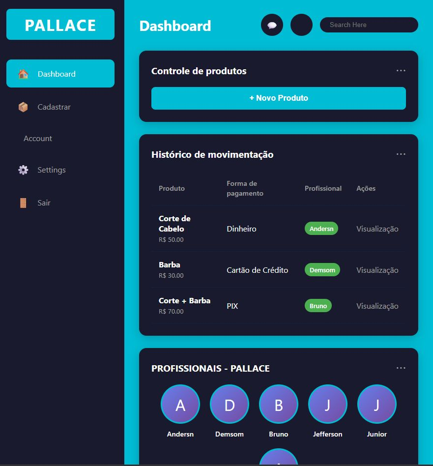

01
Quiz para programadores
Formulário com perguntas de múltipla escolha, texto, data e upload de arquivo para testar conhecimentos em programação.
Desenvolvedor de Software Júnior
Identifico o problema, diagnostico a causa e aplico a correção em código.
function entrar(usuario) { if (usuario = null) { return "erro"; }}Identificar: o login falha para todos os usuários.
Comecei na área técnica, com manutenção de computadores, depois suporte a clientes e monitoramento de redes. Esse caminho me deu o hábito de investigar a causa do problema antes de sair mexendo.
Formulário com perguntas de múltipla escolha, texto, data e upload de arquivo para testar conhecimentos em programação.

Site de cafeteria com receitas, novidades e as melhores avaliadas, em layout escuro e responsivo.

Dashboard de gestão de barbearia, com controle de produtos, histórico de movimentação e equipe de profissionais.
LLM local e open source, com interface no navegador. Aprende a partir de arquivos TXT e MD e funciona online e offline, guardando tudo no disco local. Meu projeto de aprendizado de máquina, que pretendo evoluir para um produto.
Vamos conversar?